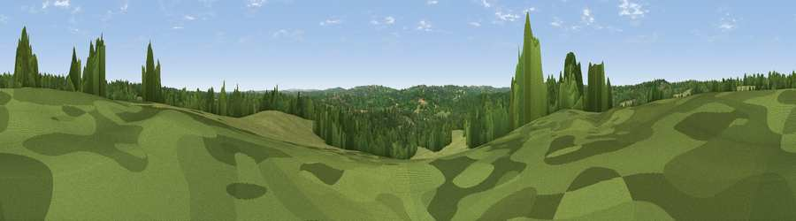

Viewpoint near Stonegate
#37072 in England · top 40% of its area beats it · near StonegateWhere it is
The exact computed spot (TQ 65375 29725). Click the marker for map links.
The view, rendered

A 360° render of this exact spot computed from the terrain model, tree cover and land cover — summer colours, afternoon light, calibrated against photographs of famous viewpoints. Real trees, hedges and buildings will differ in detail.
The panorama
Grey silhouette: terrain skyline in each direction (720 bearings, Earth curvature and refraction included). Dashed green: skyline with trees (+15 m) and buildings (+8 m) as obstacles. Blue strip: how far the ground is visible on each bearing.
Where the view opens
Wedge length = distance to the farthest visible ground on that bearing (vegetation-aware). Rings at 10, 25 and 50 km.
What fills the view
59% grassland · 37% woodland · 3% cropland ·
Angular shares of the visible panorama (visual magnitude), not map area. Landscape diversity 0.35 (0–1 Shannon).
Key numbers
More beautiful places nearby
The staircase of upgrades: each row has a higher view potential than everything closer. Driving times are estimates from straight-line distance, calibrated against real road routing — check an actual route before setting out.
| Place | Direction | Drive | Score |
|---|---|---|---|
| Viewpoint near Woods Green | NNE · 3 km | ~8 min | 38.1 |
| Best Beech Hill | WNW · 4 km | ~9 min | 44.8 |
| Viewpoint near Burwash Common | SSW · 7 km | ~14 min | 52.1 |
| Brightling Obelisk [Brightling Down] | S · 9 km | ~17 min | 69.1 |
| Viewpoint near Three Oaks | SE · 24 km | ~40 min | 69.3 |
| Viewpoint near Guestling Green | SE · 27 km | ~43 min | 72.2 |
| Viewpoint near Fairlight | SE · 27 km | ~43 min | 74.5 |
| Viewpoint near Fairlight | SE · 27 km | ~44 min | 76.7 |
51.04308, 0.35767 · source: screening · position refined by local search. Computed location — check access rights before visiting.